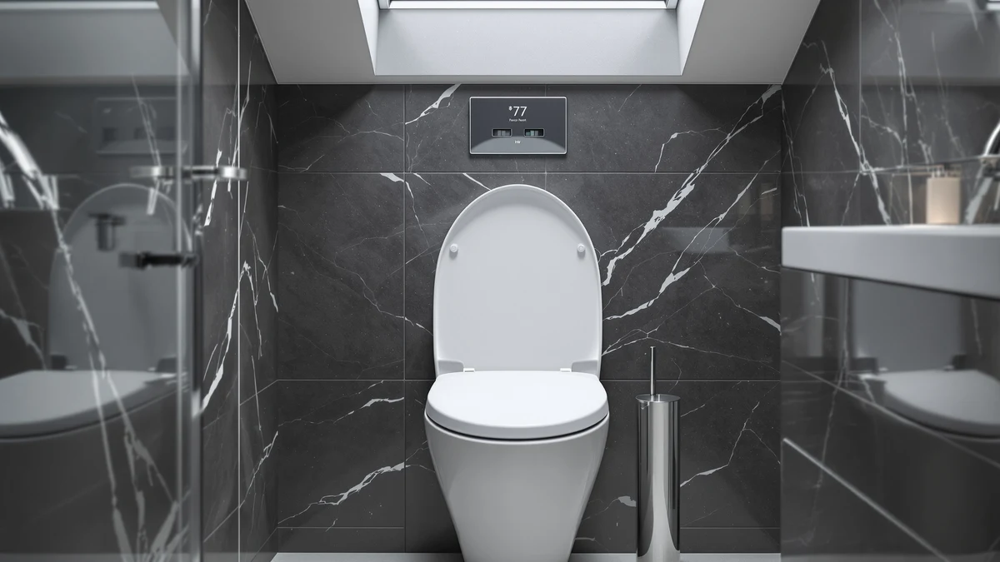

Best Under Seat Cabin Bag (2026)
Prices and picks verified as of October 2026. Independent, reader-supported reviews.


Quick Answer
If you need an easier way to sit down and stand up safely, the padded Lunderg riser below straps onto your existing seat and adds secure height in under five minutes. If your current seat itself is the problem, noisy, worn, or the wrong shape, the slow-close elongated and round seats further down fix that without changing how high you sit.
Our pick: Lunderg Padded Toilet Seat Riser, $46.95 Check Price on Amazon
Bottom line: our top pick is the Lunderg Padded Toilet Seat Riser for Seniors - Adds 2 Inches. at $46.95. The best budget option is the KOHLER Brevia Slow Close Elongated Toilet Seat at $31.44.
Things to Know Before You Buy
- A riser and a replacement seat solve different problems. A riser adds height for easier sitting and standing. A new seat improves comfort and quiet without changing how high you sit.
- Bowl shape is non-negotiable. Round and elongated seats aren't interchangeable, so measure your toilet before ordering.
- Most padded risers cap out around 250 lb. Check the weight rating before buying for a heavier user; see our bariatric toilet seats guide for higher-capacity options.
- Slow-close hinges only stay quiet if the hardware holds up. Metal hinges on the pricier picks here tend to outlast the plastic hinges on entry-level seats.
- A higher price doesn't guarantee a better rating. Two of the cheaper seats in this roundup out-rate the most expensive one.
A standard toilet seat works fine for most people, but it fails two groups in very different ways. For anyone with reduced knee, hip, or back mobility, the low, fixed height of a stock seat turns sitting down and standing up into a daily fall risk. For everyone else, the seat itself is often the annoyance: a loud slam at 2 a.m., a hinge that's worked loose, or a shape that never quite matched the bowl.
This roundup covers both problems with two different kinds of products. The padded seat risers add 2 inches of firm, strapped-on height to your current seat with no tools or plumbing involved. The slow-close replacement seats below them keep your toilet's existing height but swap in quieter hinges, a tighter fit, and in some cases tool-free removal for cleaning.
Use the comparison table below to match a pick to your bowl shape and budget, then read the individual write-ups for the fit limitations and hinge details that matter once the product is actually bolted to your toilet.
Why You Should Trust Us
I'm Ilane Tall, and I research bathroom hardware for Best Toilet Seats, where we maintain guides on more than 40 toilet seat topics, from accessibility risers to slow-close replacements. We build picks like this one from verified buyer reviews, manufacturer fit specifications, and hinge and weight-capacity data rather than marketing copy, and we flag each product's limitations alongside its strengths.
We earn a commission when you buy through our links, and that commission stays the same whichever pick you choose. No manufacturer paid for placement in this guide.
How We Picked
We started from two separate shortlists: padded seat risers for accessibility, and slow-close replacement seats for comfort and noise. For the risers, we filtered on a clearly stated weight capacity, a no-tools installation method, and a washable cover, since hygiene complaints are the most common failure point in this category. For the replacement seats, we set a rating floor of 4.3 out of 5 and weighted review volume heavily, since a 4.4 average across 28,000 reviews carries more signal than a 4.6 over a few hundred.
We also made sure the lineup covered both common bowl shapes (round and elongated) and a spread of prices, from the cheapest elongated option to a premium pick with a noticeably higher rating, so the guide answers the question whatever your bathroom and budget look like.
How We Compared
We compared every pick on the factors that decide daily satisfaction: hinge mechanism (standard top-mount versus tool-free quick-release), bowl compatibility, stated weight capacity, and the recurring themes in verified owner reviews rather than the star average alone. For the risers, we cross-checked fit claims against reported compatibility issues with raised seats, bidet attachments, and square bowls, since those are the most common mismatch complaints.
For the replacement seats, we read one- and two-star reviews in bulk to separate one-off shipping damage from repeat hinge or hardware failures, and weighted complaints that showed up across multiple months more heavily than isolated reports. Prices and ratings reflect our most recent price-sweep check.
Our Picks

Lunderg Padded Toilet Seat Riser
What we like
- Adds a firm, stable 2 inches of height without replacing the seat itself
- Velcro straps and suction cups keep it from shifting under full weight
- Washable zip-off cover wipes clean in under a minute
- Fits roughly 95% of round and elongated bowls, including Kohler and American Standard
Flaws but not dealbreakers
- Rated for users up to 250 lb, so it's not a fit for bariatric needs
- Won't work over raised seats, bidet attachments, or square bowls
| Material | Plastic / wood |
| Size | 2 inches |
This is the pick to start with if the real problem isn't the seat itself but the distance between the bowl and standing up. The riser pad straps and suctions directly onto your current seat, so there's nothing to bolt on and nothing to replace.
Because it clamps onto an existing seat rather than the bowl, installation takes a couple of minutes and the cover unzips for a deeper clean when needed. Just confirm your toilet isn't already a raised or bidet model first, since the riser isn't compatible with either.

Lunderg Padded Toilet Seat Riser
What we like
- Same firm, 250 lb-rated support and washable cover as the blue version
- Velcro straps and suction cups hold it securely in place
- White finish matches more bathroom color schemes
- Slightly cheaper than the blue version at $44.95
Flaws but not dealbreakers
- Still capped at 250 lb, so it's not a fit for bariatric needs
- Same fit exclusions: not compatible with raised seats, bidets, or square bowls
| Material | Plastic / wood |
| Size | 2 inches |
This is the same Lunderg riser as our top pick, built on the same firm padding and strap-and-suction mount, just finished in white instead of blue. If color is your only hesitation about the top pick, this version removes it.
It installs and cleans the same way: no tools, a wipeable or zip-off washable cover, and a universal fit across most round and elongated bowls. Check the same compatibility limits before buying: raised seats, bidet attachments, and square bowls are excluded.

Mayfair Linden Slow Close Toilet
What we like
- Slow-close hinges prevent the lid-slam that wakes up the house at night
- Elongated shape fits the most common modern toilet bowls
- Over 28,500 verified ratings average 4.4 out of 5
- Standard top-mount hinges install with existing bolt holes
Flaws but not dealbreakers
- Plastic surface shows scuffs faster than enameled wood over years of use
- No quick-release hinge, so removing it for deep cleaning takes a screwdriver
| Material | Plastic / wood |
| Size | Elongated |
If your current seat's only real problem is noise or a loose, worn hinge, this Mayfair covers it without touching the rest of your toilet. The elongated shape matches the bowl size most US toilets sold in the last two decades use.
With 28,500-plus verified ratings holding at 4.4 out of 5, it's the most-reviewed pick in this lineup, and the complaints that do show up are mostly about surface wear after extended use rather than the hinge itself.

KOHLER Cachet ReadyLatch Round Toilet
What we like
- ReadyLatch hinges pop off without tools for easier cleaning underneath
- Soft-close mechanism keeps both lid and seat from slamming
- Over 41,000 verified ratings hold at 4.4 out of 5, the most reviewed pick here
- Round shape fits older and compact toilet bowls that elongated seats don't
Flaws but not dealbreakers
- Only fits round bowls, so measure before buying
- Costs a few dollars more than comparable Mayfair options
| Material | Plastic / wood |
| Size | Round |
Round bowls are less common in newer US construction but still standard in plenty of older homes, and this KOHLER is the strongest-reviewed round option in this roundup. The ReadyLatch hinge system is the standout feature: it releases without a screwdriver, which matters more than it sounds like until you've tried to clean around a bolted-down seat.
At 41,000-plus verified ratings, it has the largest review base of any pick here, and the 4.4 average holds steady across both older and more recent reviews rather than trending down over time.

Mayfair Cassel Slow Close Toilet
What we like
- One of the lowest prices among the elongated slow-close options here
- Slow-close hinges reduce noise and prevent slamming
- Over 17,500 verified ratings average 4.3 out of 5
Flaws but not dealbreakers
- Slightly lower average rating than the Linden and Brevia
- Hinge hardware feels less substantial than KOHLER's
| Material | Plastic / wood |
| Size | Elongated |
This Mayfair covers the same basic need as the Linden above, a quieter elongated seat, at a slightly lower price. It won't outlast the pricier picks here, but the complaints in its review history skew toward hinge feel rather than outright failure.
At 4.3 out of 5 across 17,500-plus ratings, it's the lowest-rated seat in this lineup, though still well above the 4.3 floor we use as a cutoff for recommending any slow-close seat.

Bath Royale Slow Close Toilet
What we like
- Highest average rating in this lineup at 4.6 out of 5
- Heavier-duty build quality than the budget seats here
- Quick-release hinges for easier cleaning
Flaws but not dealbreakers
- Costs roughly double what the Mayfair and KOHLER Brevia seats run
- Smaller review base (2,220) than the higher-volume picks
| Material | Plastic / wood |
| Size | Elongated |
Bath Royale's seat carries the highest average rating of any pick in this guide, and the price reflects it. If the elongated budget options above feel flimsy on paper, this is the step up: a sturdier build with quick-release hinges on top of the standard slow-close mechanism.
Its review count is smaller than the mass-market Mayfair and KOHLER options, which is typical for a seat at this price point, but the proportion of five-star reviews mentioning build quality specifically is notably higher.

KOHLER Brevia Slow Close Elongated
What we like
- Lowest price of all seven picks in this roundup
- Slow-close hinges carry KOHLER's reputation for durability
- Over 10,000 verified ratings average 4.4 out of 5
Flaws but not dealbreakers
- No quick-release hinge like the pricier Cachet above
- Elongated only, so round-bowl bathrooms need the Cachet instead
| Material | Plastic / wood |
| Size | Elongated |
This Brevia is the budget entry point into KOHLER's lineup, and it matches the brand's 4.4 average rating at the lowest price of any pick here. You give up the ReadyLatch tool-free hinge the Cachet offers, but the slow-close mechanism itself is the same reliable standard-mount design.
For an elongated bowl where quick-release removal isn't a priority, this is the straightforward choice: KOHLER's hinge durability at a price that undercuts even the budget Mayfair options.
Quick Comparison
| Product | Material | Price | Rating | Best for | Get it |
|---|---|---|---|---|---|
| Lunderg Padded Toilet Seat Riser | Plastic / wood | $46.95 | 4 | Sit-to-stand support | View on Amazon → |
| Lunderg Padded Toilet Seat Riser | Plastic / wood | $44.95 | 4 | Same riser, white finish | View on Amazon → |
| Mayfair Linden Slow Close Toilet | Plastic / wood | $35.99 | 4.4 | Quiet elongated upgrade | View on Amazon → |
| KOHLER Cachet ReadyLatch Round Toilet | Plastic / wood | $38.99 | 4.4 | Round bowls, tool-free hinges | View on Amazon → |
| Mayfair Cassel Slow Close Toilet | Plastic / wood | $34.99 | 4.3 | Lowest-cost elongated slow-close | View on Amazon → |
| Bath Royale Slow Close Toilet | Plastic / wood | $79.98 | 4.6 | Highest-rated premium pick | View on Amazon → |
| KOHLER Brevia Slow Close Elongated | Plastic / wood | $31.44 | 4.4 | Cheapest overall | View on Amazon → |
Should I buy a toilet seat riser or just replace the toilet seat?
Buy a riser if the problem is sitting down and standing up safely.
Do toilet seat risers fit every toilet?
No.
The Competition
Bemis Whisper Close seats offer soft-close at a budget price, but the plastic hinges tend to loosen within 12 to 18 months according to recurring reviews. The KOHLER Brevia here offers better hinge durability for a similar price.
Foam "cushioned" toilet seats market themselves as a comfort upgrade, but they solve a different problem than a riser: they soften the seat surface without adding any height, so they don't help with sit-to-stand difficulty at all.
Full raised-seat replacements with built-in arms add more height and stability than a riser pad, but they cost two to three times as much and some bathrooms simply don't have the clearance. Our raised toilet seats with arms guide covers that tier for anyone who needs more support than a padded riser provides.
Frequently Asked Questions
Should I buy a toilet seat riser or just replace the toilet seat?
Buy a riser if the problem is sitting down and standing up safely. Buy a replacement seat if the current seat is noisy, worn, or the wrong shape for your bowl. A riser adds height on top of your existing seat; a replacement seat keeps the same height but improves comfort, hinges, and noise. Our raised toilet seats for seniors guide covers the full-replacement option in more depth.
Do toilet seat risers fit every toilet?
No. Most padded risers fit roughly 95% of round and elongated bowls, but they are not compatible with raised seats, bidet attachments, or square or irregular bowls. Measure your bowl shape and check the listed weight capacity, usually around 250 lb, before ordering. For heavier users, see our bariatric toilet seats guide.
How long does a slow-close toilet seat actually last?
Most slow-close hinges hold up for several years of normal use, but hinge quality varies by brand and price. Metal hinge components on pricier seats tend to outlast the plastic hinges on entry-level models, and verified buyer reviews over multiple years are a better signal than the star rating alone.